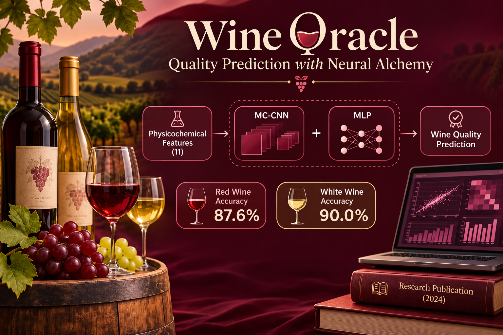

DEEP LEARNING · PREDICTIVE MODELING
Wine Oracle:
Quality Prediction with Neural Alchemy
A hybrid MC-CNN and MLP model predicts wine quality across 14,852 rows in the bundled red and white datasets, using 11 physicochemical features.
- MC-CNN
- MLP
- Dropout
- Feature scaling
Co-authored peer-reviewed publication in REST Journal on Data Analytics & AI, 2024.
